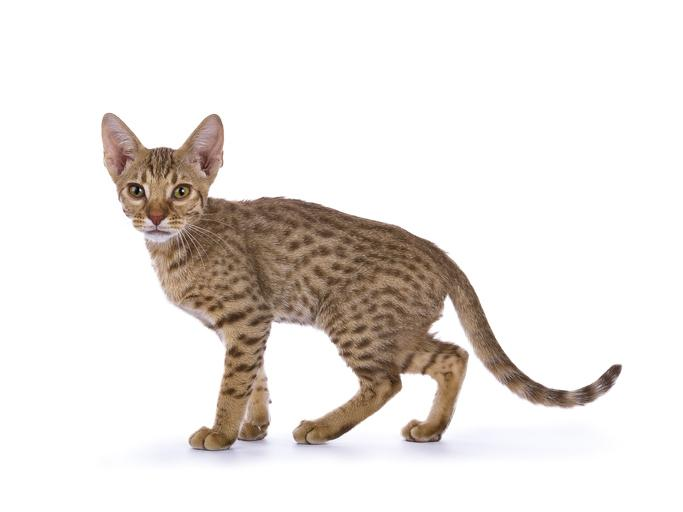

Fue hasta los años 60 que una criadora estadounidense cruzó un siamés con una gata que era una mezcla de siamés y abisinio, obteniendo con dicho cruce una camada con un ejemplar muy particular, de manto marfil y manchas doradas. Sin embargo, no fue entonces cuando se originó la raza ocicat, pues dicho ejemplar fue esterilizado. Pero, tras diversos cruces entre abisinios y siameses, se consiguieron más gatitos de esas características. Al principio se cruzaban siameses y abisinios, no obstante, se fue aumentando el número de razas de gatos con las que hibridar para, así, reforzar la genética de la raza y conseguir que esta no fuera vulnerable ni inestable.
Los ocicat tienen un tamaño algo cambiante, pero suelen ser medianos o grandes, con un peso de entre 2 y 6 kilogramos. Como podemos ver, es una diferencia considerable entre unos ejemplares y otros, siendo este el motivo por el que encontramos al gato ocelote en distintos tamaños, siendo todos ellos puros. Lo que sí es cierto es que en individuos de la misma camada las hembras son, como suele pasar en otras razas gelinas, ligeramente más pequeñas que los machos. Siguiendo con las características del ocicat, el cuerpo de estos felinos es fibroso, estilizado y bastante grande. Las extremidades son largas, musculosas, más cortas las delanteras, rematadas en unas palmas compactas y de forma oval. Su cola es larga y más ancha en la base que en la punta. La cabeza de los ocicat presenta una silueta triangular, pero de bordes muy suaves y redondeados, destacando la presencia de sus grandes y almendrados ojos, que suelen presentar casi todos los tonos, no siendo generalmente aceptados los azules, excepto en los casos en los que el color del propio pelaje lo justifique.

El pelo del gato ocelote es corto, fino pero denso y con un ligero toque brillante, lo cual hace que destaque su musculosa silueta. El patrón del pelaje es su característica clave, pues es lo que simula el pelaje de los ocelotes, con motas de tamaño mediano y bude dibujo bien definido. El tono del pelaje es más claro en la parte de la cara comprendida entre la mandíbula superior y el mentón, siendo especialmente oscuro en el resto de la cara, las patas y la cola, en la que el color se va oscureciendo a medida que se acerca a la punta. Se aceptan bastantes colores para esa capa moteada o spotted tabby: lila, rubio, canela, marrón, azul, corso, silver y fawn

Pese a que su aspecto salvaje pueda resultar imponente y suscitar el recelo de los que no han tratado con ellos, el temperamento del ocicat es el de un gato sumamente cariñoso y juguetón, derrochando su amor y cariño hacia sus humanos y también hacia casi todo aquel que le brinda su atención. En general, se trata de un gato muy activo, gustándole mucho jugar y saltar, pero, a la vez, e el comportamiento del ocicat es equilibrado. Así mismo, cabe destacar que estamos ante un gato muy inteligente, por lo que le encantan especialmente los juegos de inteligencia.

No necesitan que dediquemos un tiempo excesivo a mantenerlos sanos y aseados, pues con uno o dos cepillados semanales y algún baño esporádico será más que suficiente. Aunque su pelo es corto, en la época de muda puede que necesitemos emplear productos contra las bolas de pelo para evitar que se formen en el aparato digestivo de nuestro gatito, causándole bastante malestar e incomodidad. Tendremos que cuidar la alimentación de nuestro felino, proporcionándoles una comida variada y equilibrada que cubra sus necesidades dietéticas adecuadamente. También hemos de asegurar que haya juguetes que le gusten a su disposición, para que así canalicen de una forma conveniente y no destructiva toda la energía y vitalidad que lo caracterizan. Por último, debido a su intolerancia a la soledad, es fundamental tener en cuenta que la raza ocicat requiere más atención que otras por nuestra parte. Así, no basta con dejarle los juguetes y proporcionar un correcto enriquecimiento ambiental, es preciso que dediquemos tiempo a jugar con el gato, a darle mimos y cariño. Así mismo, socialziarlo es fundamental para lograr que aprenda a relacionarse con otras personas y animales.

No presenta patologías congénitas reseñables, siendo una raza robusta y resistente. Pese a ello, hay que tener en cuenta que estamos ante una raza realmente reciente, por lo que puede que aún no se haya comprobado irrefutablemente que no padezcan determinadas enfermedades con mayor facilidad que otras razas.